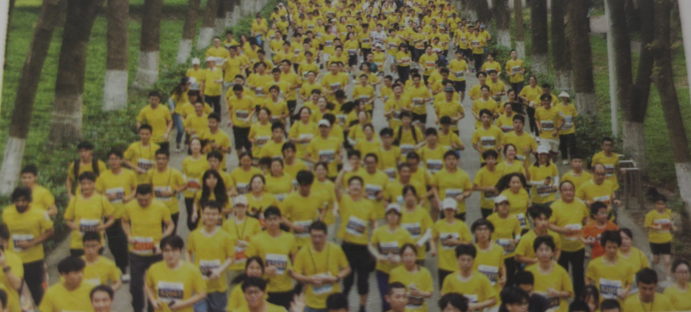
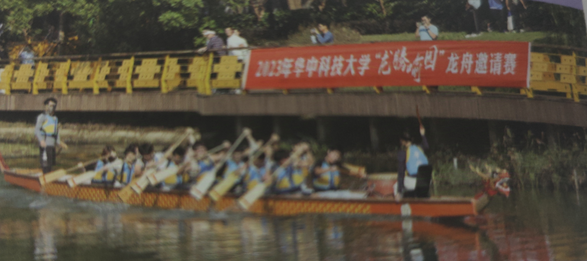
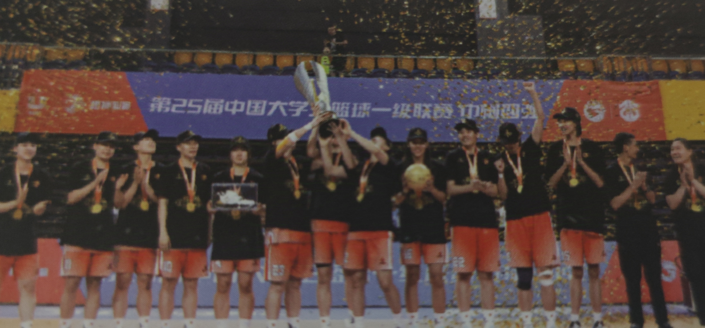
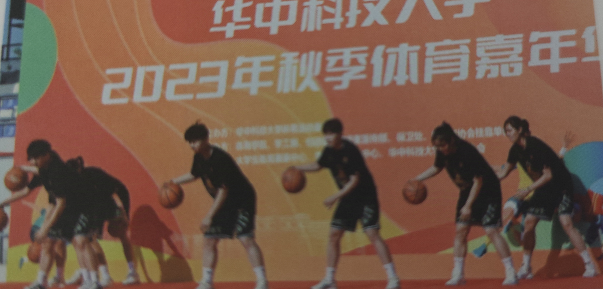
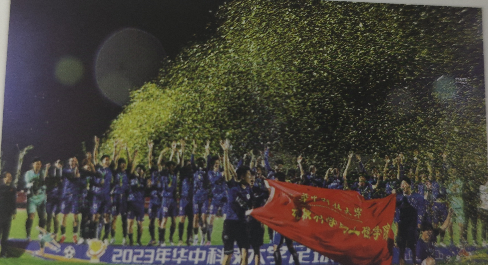
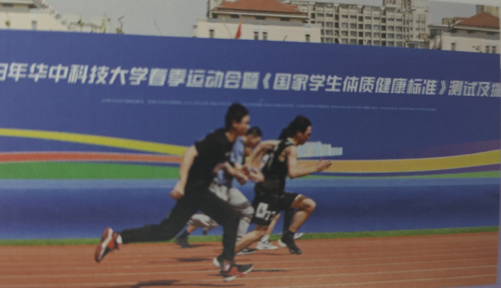
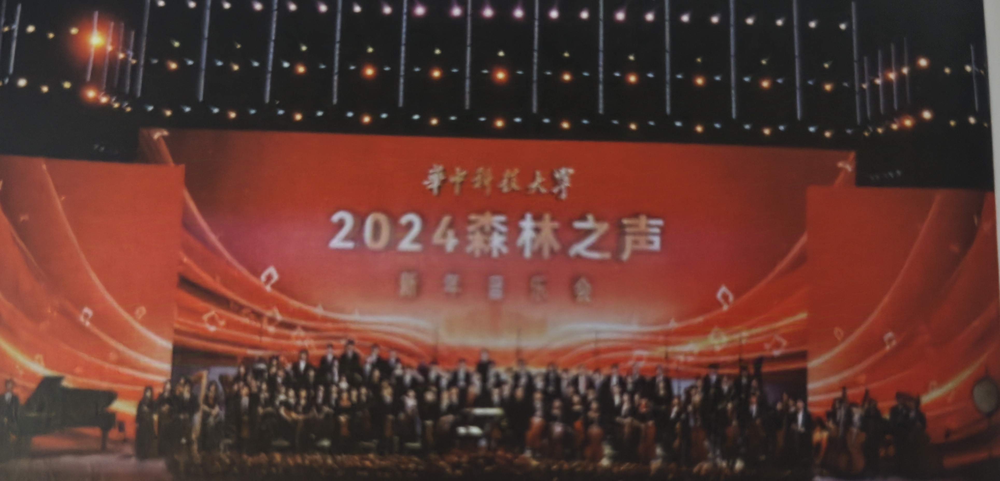

丰富活动
森林马拉松
- 在森林里，每年两期的校园森林马拉松赛有万余师生、校友参与，已经成为师生广泛参与的校园精品活动之一。
龙舟竞渡
- 赛龙舟不仅是一项运动、一种文化，更是大中华和华科大的高洁之气。队员们脚踏晨光手握木桨，把信念挥洒成汗水，把坚持铸就荣耀。
中国大学生篮球联赛
- 第二十五届中国大学生篮球联赛我校女篮问鼎全国总冠军，成为继清华北大后第一所男篮和女篮都获全国总冠军的院校。
体育嘉年华
- 涵盖数十项趣味体育游戏，设置荧光打卡墙、体育文化走廊等趣味环节。
华科杯
- 每年组织足球、篮球、排球、乒乓球、羽毛球、网球、校园定向等项目校级比赛。
运动会
森林音乐节
- 在森林式的大学里从不缺高山流水，多的是丝竹雅韵。晚来赏佳音，在华科，艺术之美与人文之美魅力与共。